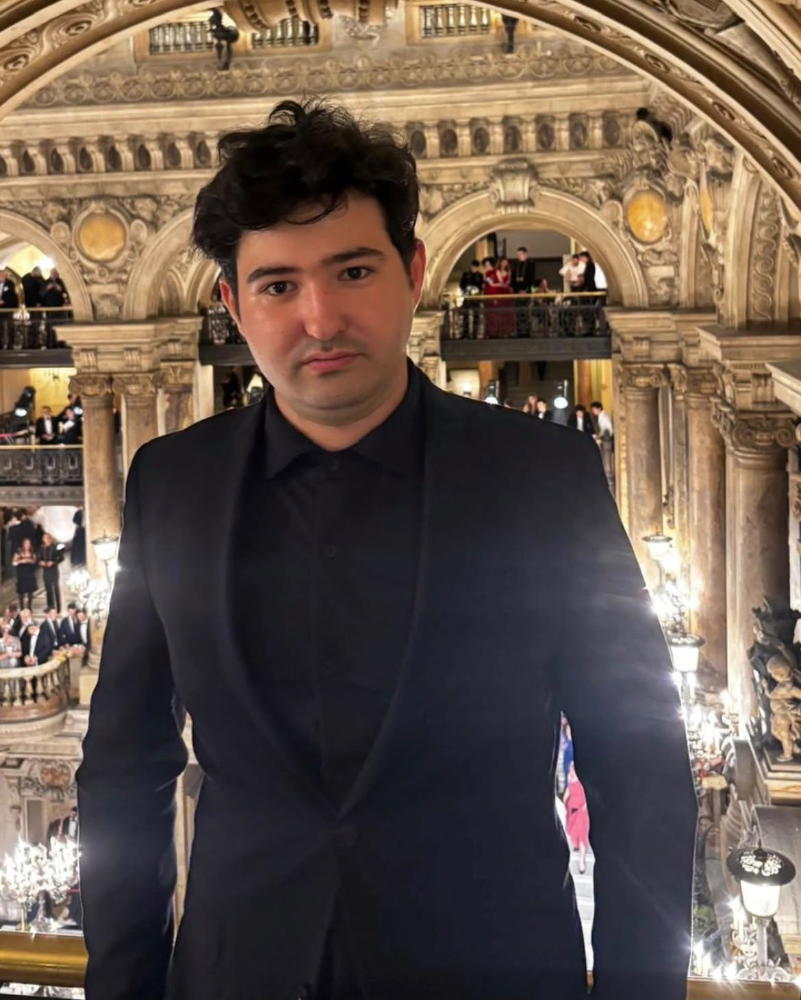
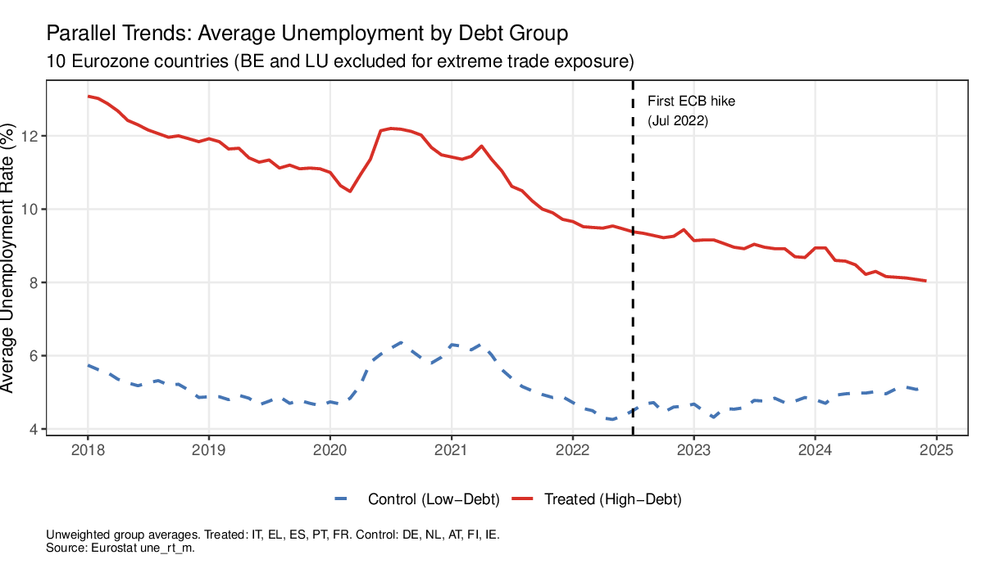
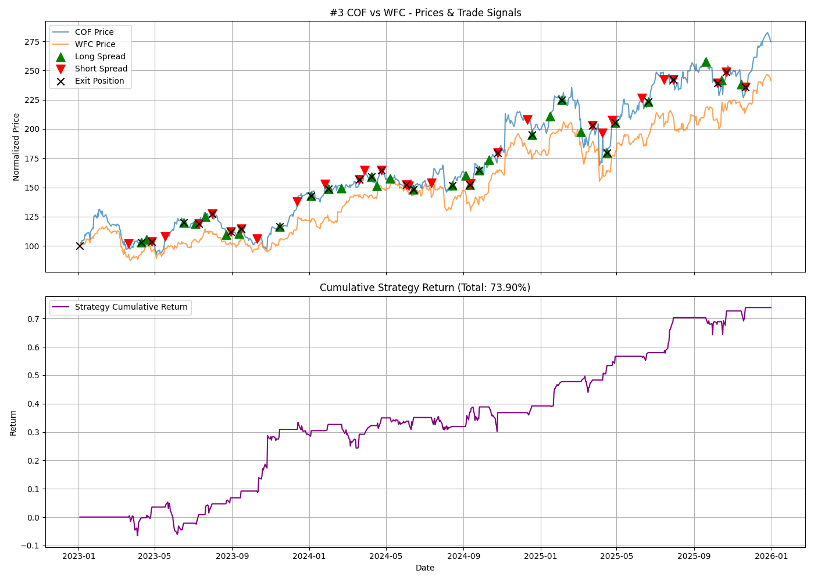

AI/ML Engineering Intern
Loon BiosciencesDeveloped and applied time-series foundation models in Python to forecast timings in healthcare logistics, and built ML pipelines to optimize processes across the drug-development workflow.
Bachelor student in Mathematics & Economics with a minor in Computer Science. I build things at the intersection of quantitative research and software — from econometric panel studies to transformers written from scratch.

Developed and applied time-series foundation models in Python to forecast timings in healthcare logistics, and built ML pipelines to optimize processes across the drug-development workflow.
Engineered and optimized ESP32-based IoT products.
Solved advanced optimization problems, including quantum-computing methods, and integrated SQL databases with client applications.
Authored C++ Windows DLLs for system-file operations with unit tests, and built a multi-threaded directory & DLL-load monitor using a custom thread pool and the observer pattern over the Win32 API, with a C#/WinUI front-end.

Co-authored study estimating the causal effect of ECB monetary tightening on unemployment via difference-in-differences with two-way fixed effects and FE-2SLS, on a 20-country, 84-month panel — 1,680 observations, 2018–2024.

Cointegration-based (Engle–Granger) pairs-trading engine over the S&P 500 with rolling z-score entry/exit signals; backtested 5 cointegrated pairs to a 75% win rate across 142 trades, 2023–2025.
View repository →Built a 124M-parameter transformer from scratch in PyTorch (12 layers, RoPE, SwiGLU) as one of six swappable models in a web-grounded QA platform on FastAPI/Streamlit, benchmarked across ten use cases.
View repository →Mathematical modeling of pandemic outbreaks with an SIRD framework, optimal control via Hamilton–Jacobi–Bellman equations and Snell-envelope stopping, with an interactive Python/Matplotlib dashboard.
View repository →B.Sc. (expected 2028) — Double Major in Mathematics & Economics, Minor in Computer Science. Coursework in probability & statistics, real analysis, mathematical optimization, econometrics, algorithms & data structures, discrete mathematics, and mathematical modeling.
When the markets close, the decks open. I run dor de noche, a house-music curation project — deep house, jazz-inflected grooves, and long mixes built on a Pioneer DDJ-FLX4. Earlier, I organized Connecteens in Bucharest: conferences across banking, AI, Model NATO, and space.